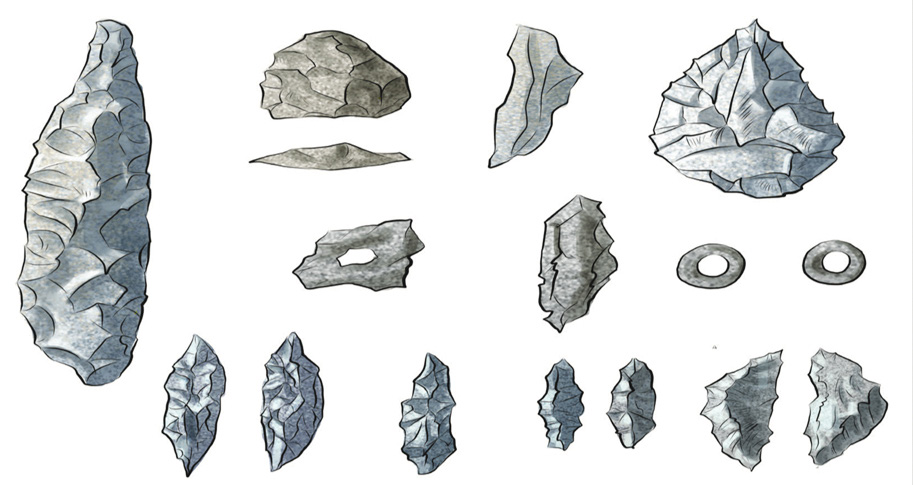

Kielelezo namba 5: Zana za Zama za Mawe za Mwisho
Binadamu alianza kuwekea mipini baadhi ya zana za mawe kama vile mashoka, mikuki na mishale. Mipini iliwezesha zana kuwa imara zaidi katika utumiaji kulinganisha na hapo awali. Zana hizi zilileta maendeleo katika shughuli za kilimo na uwindaji. Pia, zana hizi zilitumika kutengenezea nguo za asili za magome ya miti na ngozi za wanyama. Magome ya miti yalipondwa na mawe ili kulainishwa hadi kupata nguo.
Uthibitisho wa maendeleo ya sayansi na teknolojia za asili katika utengenezaji na matumizi ya zana hizo kipindi cha Zama za Mawe za Mwisho, unahusishwa na uwapo wa mabaki ya zana kama mawe ya kusagia nafaka, mitego ya wanyama na mabaki ya mifupa mikubwa ya wanyama kama tembo na twiga katika mapango walimoishi binadamu wa kipindi hicho. Inasadikiwa kwamba wanyama hao waliwindwa kwa kutumia zana zilizotumika katika kipindi hicho.
Mchango wa sayansi na teknolojia asilia za Zama za Mawe
Zana za mawe zilileta maendeleo kadhaa katika maisha ya